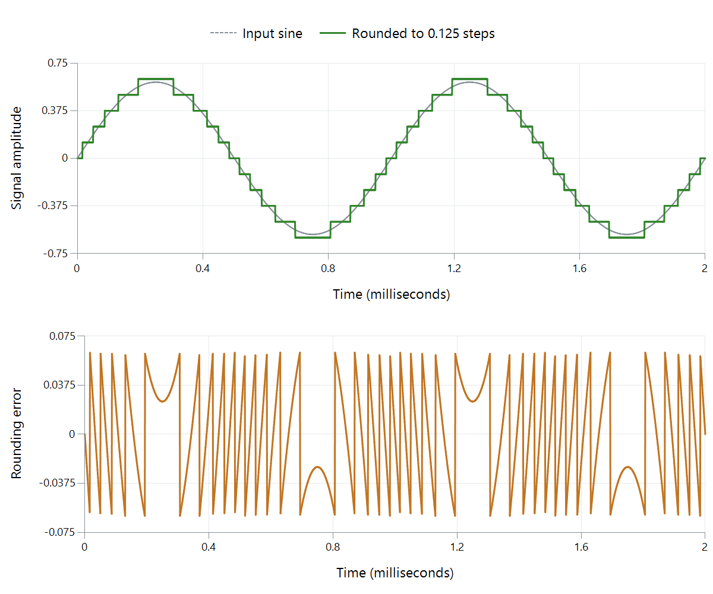

Audio Quantization Noise
Digital audio with finite precision cannot represent every possible amplitude exactly. Quantization error is the difference between the desired value and the available value chosen for it. It is created by numerical rounding, even in an otherwise ideal system.

Calculated illustration: a sine with peak amplitude 0.6 is rounded to a uniform step of 0.125, equivalent to a very coarse 4-bit quantizer over a nominal −1 to +1 range. No clipping is applied. The lower panel shows rounded value minus input; the error stays within half a step.
The exaggerated precision makes the effect visible. Ordinary 16-bit and 24-bit PCM use much smaller steps.
Why it can sound like more than hiss
Rounding a small periodic signal can produce an error that repeats with the signal. The result can include distortion components rather than a smooth noise floor. “Quantization noise” is therefore a convenient name, but the error is not automatically random.
Dither adds carefully chosen noise before quantization to remove unwanted signal-dependent behavior. This trades the pattern in the error for a controlled noise floor.
Under an idealized model with a full-scale sine and uncorrelated quantization error, signal-to-noise ratio is approximately 6.02 × N + 1.76 dB, where N is the integer bit depth. That gives about 98 dB for 16-bit PCM. It is a model of quantization performance, not a measurement of a complete recording or a dithered playback chain.
In an Emby listening session, hiss might instead come from the original recording, an analog output, or amplification. The reported bit depth describes available numerical precision; it cannot identify the source of audible noise by itself.